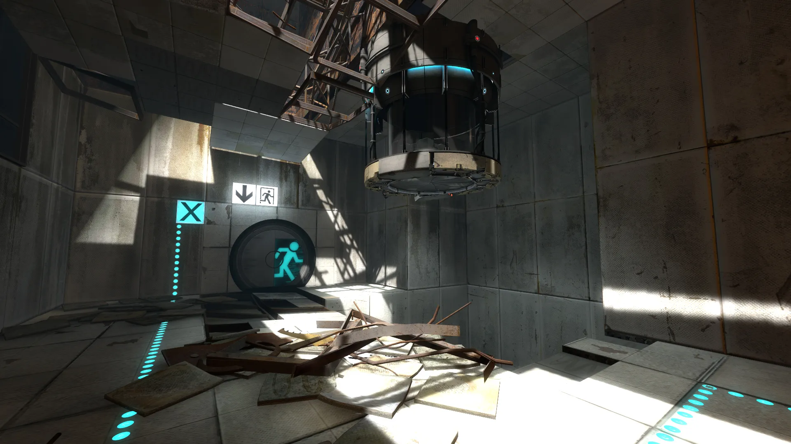

Portal 2 is een puzzelspel ontwikkeld door Valve Corporation, waarin de speler Chell moet ontsnappen uit het Aperture Science Facility met behulp van een Portal Gun en nieuwe gereedschappen zoals glazen 'cubes' en een springgel. Het spel introduceert nieuwe gameplay-elementen en een uitgebreid verhaal met verrassende wendingen. Het is beschikbaar op meerdere platforms, waaronder Windows, OS X, Xbox 360, en PlayStation 3
Platformer
Puzzle
First-Person
Dark Humor
Rating: 95/100
Platformer
Puzzel
Genre: Puzzel
Ontwikkelaar: Valve
Uitgavedatum: 19 april 2011
Besturingsysteem: Windows 7 / Vista / XP
Processor: 3.0 GHz P4, Dual Core 2.0 (of sterker) of AMD64X2 (of sterker)
Geheugen: 2 GB
Grafische kaart: De videokaart moet 128 MB of meer zijn en ondersteuning hebben voor Pixel Shader 2.0b (ATI Radeon X800 of hoger / NVIDIA GeForce 7600 of hoger / Intel HD Graphics 2000 of hoger).
DirectX: 9.0c
Opslag: 8 GB
"A truly spectacular sequel that reaches previously unthinkable heights. Portal 2 is an experience to be cherished and already a strong contender for the best game of 2011."
-X-ONE Magazine UK
"Never before has a review embargo had us screaming inside so badly that our mind eventually goes hoarse. We've wanted to shout from the rooftops about how Portal 2 not only betters the original Portal, but completely annihilates it...If you thought the original Portal was a masterpiece, prepare to have your mind blown. "
-GameWatcher
"A joy to play. There is no other way to describe it."
-Play.tm